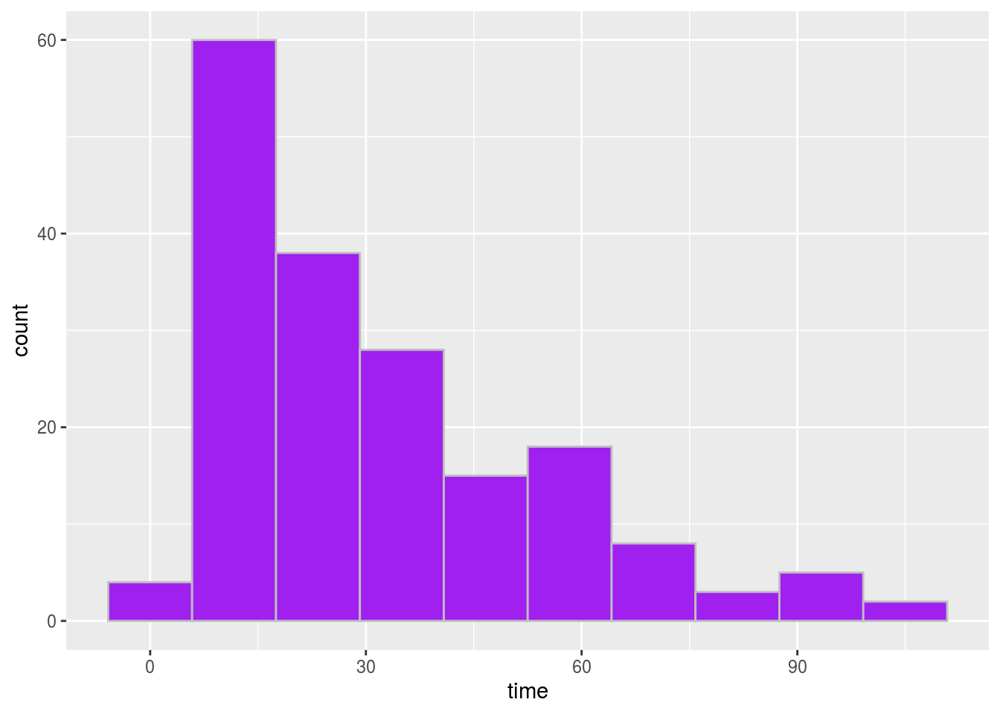

Part1. Abstraction
My abstract. We use Wickham et al. (2019).
Introduction
This dataset is about the outbreaks in Toronto healthcare institutions (including hospitals, long-term care homes and retirement homes). These healthcare institutions have the responsibility to monitor staff and patients/residents for signs and symptoms of gastroenteric and respiratory such as nausea, vomiting, diarrhea, fever, cough, runny nose and sore throat. If the rate of infection or illness increase locally or higher than expectation,we call it “outbreak”.
Data introduction
Introduce the scenario and study objectives.
Outbreak setting: The type of facility, in terms of the type of healthcare provided
Type of outbreak: The mode of transmission classification description of the outbreak
Causative agent-1: The aetiological agent(s) that have been identified from one or more outbreak-related cases, when an agent is confirmed.
Time: the time of breakout last.
I removed some variables from the original data, here is the reasons I removed them:
Causative Agent - 2:
Code part
install.packages("opendatatoronto")
## Installing package into '/home/rstudio-user/R/x86_64-pc-linux-gnu-library/4.0'
## (as 'lib' is unspecified)
library(opendatatoronto)
library(dplyr)
##
## Attaching package: 'dplyr'
## The following objects are masked from 'package:stats':
##
## filter, lag
## The following objects are masked from 'package:base':
##
## intersect, setdiff, setequal, union
library(tidyverse)
## ── Attaching packages ────────────────────────────────────────── tidyverse 1.3.0 ──
## ✓ ggplot2 3.3.2 ✓ purrr 0.3.4
## ✓ tibble 3.0.3 ✓ stringr 1.4.0
## ✓ tidyr 1.1.2 ✓ forcats 0.5.0
## ✓ readr 1.3.1
## ── Conflicts ───────────────────────────────────────────── tidyverse_conflicts() ──
## x dplyr::filter() masks stats::filter()
## x dplyr::lag() masks stats::lag()
# get package
package <- show_package("80ce0bd7-adb2-4568-b9d7-712f6ba38e4e")
package
## # A tibble: 1 x 10
## title id topics civic_issues excerpt dataset_category num_resources formats
## <chr> <chr> <chr> <chr> <chr> <chr> <int> <chr>
## 1 Outb… 80ce… <NA> <NA> <NA> <NA> 6 <NA>
## # … with 2 more variables: refresh_rate <chr>, last_refreshed <date>
resources <- list_package_resources("80ce0bd7-adb2-4568-b9d7-712f6ba38e4e")
datastore_resources <- filter(resources, tolower(format)%in%c('xlsx','ob_report_2020'))
data <- filter(datastore_resources,row_number()==2) %>% get_resource()
data
## # A tibble: 344 x 9
## `Institution Na… `Institution Ad… `Outbreak Setti… `Type of Outbre…
## <chr> <chr> <chr> <chr>
## 1 Toronto Western… 399 Bathurst St Hospital-Acute … Enteric
## 2 Terraces of Bay… 55 Ameer Ave Retirement Home Respiratory
## 3 Humber Valley T… 95 Humber Colle… LTCH Respiratory
## 4 Norwood Nursing… 122 Tyndall Ave LTCH Respiratory
## 5 Fairview Nursin… 14 Cross St LTCH Respiratory
## 6 Deerwood Creek … 70 Humberline Dr LTCH Enteric
## 7 Pine Villa Tran… 1035 Eglinton A… LTCH Respiratory
## 8 Donway Place Re… 8 The Donway E Retirement Home Respiratory
## 9 Fieldstone Comm… 1000 Ellesmere … LTCH Respiratory
## 10 Maynard Nursing… 28 Halton St LTCH Respiratory
## # … with 334 more rows, and 5 more variables: `Causative Agent - 1` <chr>,
## # `Causative Agent - 2` <chr>, `Date Outbreak Began` <dttm>, `Date Declared
## # Over` <dttm>, Active <chr>
colSums(is.na(data))
## Institution Name Institution Address Outbreak Setting Type of Outbreak
## 0 1 1 1
## Causative Agent - 1 Causative Agent - 2 Date Outbreak Began Date Declared Over
## 1 325 1 8
## Active
## 1
data1 = data %>%
select(-`Causative Agent - 2`)
data1 = data1[!data1$`Causative Agent - 1` %in% c('Unable to identify'),]
data1$`time` = difftime(data1$`Date Declared Over`,data1$`Date Outbreak Began`,units="days")
data1 = data1 %>%
select(-`Institution Address`)
data1 = data1[!data1$Active %in% c('Y'),]
data1 = data1 %>%
select(-Active)
data1 = data1 %>%
select(-`Date Outbreak Began`, -`Date Declared Over`)
ggplot(data = data1,aes(x = `time`)) +
geom_histogram(color='grey', fill='purple',bins= 10)
## Don't know how to automatically pick scale for object of type difftime. Defaulting to continuous.
## Warning: Removed 1 rows containing non-finite values (stat_bin).
Reference
Wickham, Hadley, Mara Averick, Jennifer Bryan, Winston Chang, Lucy D’Agostino McGowan, Romain François, Garrett Grolemund, et al. 2019. “Welcome to the tidyverse.” Journal of Open Source Software 4 (43): 1686. https://doi.org/10.21105/joss.01686.